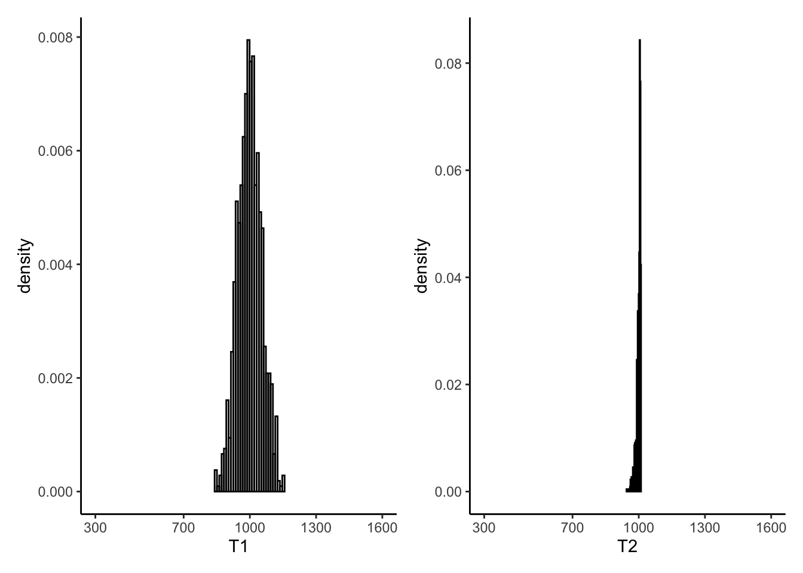

Chapter 5 Evaluating Estimators: Efficiency and Mean Squared Error
This chapter introduces the concepts of Efficiency and Mean Square Error and shows how to use them to evaluate the performance of an estimator. This material is covered in Chapter 20 of A Modern Introduction to Probability and Statistics.
5.1 Estimating a Uniform Maximum
In World War II, it was of interest to the Allied forces to estimate the number of tanks that the German army had produced. German tanks had serial numbers, which were assigned sequentially at production. That means that the largest serial number of any tank in existence at any given time is also equal to the number of tanks having been produced up to that point in time.
Whenever Allied forces captured or destroyed a tank, they would record the serial number. Call \(X_{i}\) the serial number of the \(i^{th}\) tank. Assuming that
the probability of capturing any particular tank is the same as any other tank, and
that this occurs independently of the capture of other tanks, and
that a tank can only be captured once,
we would have a sample of size \(n\) from a discrete uniform distribution with maximum value \(N\), taken without replacement. The unknown value \(N\) happens to equal the number of German tanks produced, and the Allies wanted to estimate this number using the recorded serial numbers \(X_{1},\ldots,X_{n}\).
This requires constructing an estimator for \(N\) using a sample of \(\text{Unif}(1,N)\) random variables. However, these samples are dependent, because the sampling is done without replacement: once a particular tank appears in the sample, it can’t appear again. Let \(X_{i}\) be the serial numbers of the captured tanks; it can be shown that \[\begin{equation}\begin{aligned} E\left( \frac{1}{n}\sum_{i=1}^{n}X_{i}\right) &= \frac{N+1}{2} \\ E\left(\text{max} X_{i}\right) &= \frac{n}{n+1}\times(N+1) \end{aligned}\end{equation}\]
Perhaps we should construct an unbiased estimator, given our discussion in the previous chapter.
Exercise: construct two unbiased estimators for \(N\), using these two results on the expected values of the sample mean and maximum. Do this before you look at the answer below. If you look at the answer below first, then you will learn less from this exercise.
Next, let’s write functions to compute these two estimators, and use simulation to verify that they are unbiased. At this point in the course, you should start feeling comfortable approaching this yourself. Again, I encourage you to try this before looking at my answer as follows:
library(tidyverse)
library(patchwork)
set.seed(432354675)
# Functions to compute the estimators
T1 <- function(x) 2 * mean(x) - 1
T2 <- function(x) ( (length(x) + 1)/length(x) ) * max(x) - 1
# Now, simulate in order to assess their bias.
# This goes as follows (try this yourself before looking):
# - Choose a true value of N, the parameter to be estimated
# - Draw a sample of size n from 1:N without replacement
# - Compute T1 and T2
# - Repeat this M times, and compare the average of T1 and T2 to N.
N <- 1000
n <- 100
M <- 1000 # One million simulations
# Run the simulations. Use the sample.int() function to generate from a DISCRETE
# uniform distribution
thesimulations <- list(
T1 = numeric(M),
T2 = numeric(M),
T3 = numeric(M)
)
for (i in 1:M) {
# Do the simulation
# Sample from a discrete uniform (?sample.int):
thesample <- sample.int(N,n,replace = FALSE)
# Record the values of the two estimators:
thesimulations$T1[i] <- T1(thesample)
thesimulations$T2[i] <- T2(thesample)
}
# Evaluate the bias of T1 and T2:
mean(thesimulations$T1) - N[1] -1.7[1] 0.31Exercise:
What do you think about the bias of \(T_{1}\) and \(T_{2}\)? Repeat this whole simulation multiple times and plot a histogram of the biases. What do you conclude?
Try the simulation again with a higher value of \(M\), like \(M = 10^{6}\) or whatever your computer can handle. What do you conclude?
Finally, let’s look at the sampled values of \(T_{1}\) and \(T_{2}\):
# Recreate the plots in Figure 20.1:
leftplot <- tibble(T1 = thesimulations$T1) %>%
ggplot(aes(x = T1)) +
theme_classic() +
geom_histogram(aes(y = ..density..),bins = 30,colour = "black",fill = "transparent") +
scale_x_continuous(breaks = c(300,700,1000,1300,1600)) +
coord_cartesian(xlim = c(300,1600))
rightplot <- tibble(T2 = thesimulations$T2) %>%
ggplot(aes(x = T2)) +
theme_classic() +
geom_histogram(aes(y = ..density..),bins = 30,colour = "black",fill = "transparent") +
scale_x_continuous(breaks = c(300,700,1000,1300,1600)) +
coord_cartesian(xlim = c(300,1600))
leftplot | rightplot
Remembering that \(N = 1000\) in this example, do you prefer either \(T_{1}\) or \(T_{2}\)?
5.2 Efficiency
You can often construct multiple unbiased estimators for the same problem. Are they all as “good” as one another, or is there some reason to prefer one over another? One way to compare estimators is by looking at their variance. If one unbiased estimator has lower variance than another unbiased estimator, we say that the one with lower variance is more efficient than the one with higher variance.
Estimators are random variables and you can calculate their variances mathematically.
Exercise: let \(X_{i},\overset{iid}{\sim}\text{N}(\mu,1)\) and suppose we have the following two estimators for \(\mu\): \[\hat{\mu}_{1} = X_{1}, \hat{\mu}_{2} = \frac{1}{n}\sum_{i=1}^{n}X_{i} = \bar{X}.\]
Show that \(\hat{\mu}_{1}\) and \(\hat{\mu}_{2}\) are both unbiased estimators of \(\mu\),
Show that \(\hat{\mu}_{2}\) is more efficient than \(\hat{\mu}_{1}\).
Remarkably, it can be shown that there is actually a lower bound on the variance of any unbiased estimator for some likelihoods. This is called the Cramer-Rao lower bound, and states that for a sample \(X_{i}\overset{iid}{\sim}F_{\theta}, i=1,\ldots,n\) with log-likelihood \(\ell(\theta)\), and \(\hat{\theta}\) any unbiased estimator of \(\theta\), that \[\text{Var}(\theta) \geq \frac{n}{-\partial^{2}\ell(\tilde{\theta}) / \partial\theta^{2}},\] where \(\tilde{\theta} = \text{argmax}\ell(\theta)\), the maximum value of \(\ell(\theta)\). In order for this bound to hold, the log-likelihood has to satisfy certain mathematical “regularity” conditions which are outside the scope of this course.
When an unbiased estimator has variance which equals the lower bound, we say that this estimator is efficient.
Exercise: show that \(\hat{\mu}_{1}\) is not efficient and that \(\hat{\mu}_{2}\) is efficient, as follows:
Write down the log-likelihood \(\ell(\theta)\) and the second derivative \(\partial^{2}\ell(\theta) / \partial\theta^{2}\) for this example,
Compute the maximum \(\tilde{\theta} = \text{argmax}\ell(\theta)\) and the curvature \(\partial^{2}\ell(\tilde{\theta}) / \partial\theta^{2}\),
Compare the variance of \(\hat{\mu}_{1}\) and \(\hat{\mu}_{2}\) to the bound \(\frac{n}{-\partial^{2}\ell(\tilde{\theta}) / \partial\theta^{2}}\).
The discrete Uniform likelihood does not satisfy the conditions for the lower bound to hold. However, we can compare the efficiency of \(T_{1}\) and \(T_{2}\) using simulation:
[1] 2985[1] 71Exercise: which estimator appears more efficient based on these simulations?
Discussion: is the existence of a lower bound on the variance of an unbiased estimator a good or bad thing? Consider the following points and talk about it with your classmates:
It’s a good thing, because if we want to pick an unbiased estimator to use, we just need to find one with variance that meets the lower bound (you will see in a subsequent chapter that this is actually really, really easy to do),
It’s a bad thing, since it limits how “good” an unbiased estimator can be.
5.3 Mean Squared Error
We have seen two examples of how to evaluate the quality of an estimator \(\hat{\theta}\) of a parameter \(\theta\): its bias: \[\text{bias} = E\hat{\theta} - \theta,\] and its variance: \[\text{Var}(\hat{\theta}) = E\left[\left(\hat{\theta} - E\hat{\theta}\right)^{2}\right].\] We can combine these two into a single measure of the quality of \(\hat{\theta}\).
Definition: the mean squared error of an estimator \(\hat{\theta}\) is the mean of the squared error in using \(\hat{\theta}\) to estimate \(\theta\): \[\text{MSE}(\hat{\theta}) = E\left[\left(\hat{\theta} - \theta\right)^{2}\right].\]
Exercise: show that \(\hat{\theta}\) is unbiased if and only if \(\text{MSE}(\hat{\theta}) = \text{Var}(\hat{\theta})\).
The MSE combines the variance and the bias of an estimator as follows:
Exercise: prove that \[\text{MSE}(\hat{\theta}) = \text{Var}(\hat{\theta}) + \text{bias}(\hat{\theta})^{2}.\]
Exercise: for the Normal random sample from before, compute the MSE of \(\hat{\mu}_{1}\) and \(\hat{\mu}_{2}\).
Exercise: for the Uniform random sample from before,
Compute the MSE of \(T_{1}\) and \(T_{2}\) from the simulations,
Show that \(T_{3} = \text{max}(X_{i})\) is a biased estimator of \(N\).
Even though \(T_{3}\) is a biased estimator, is it a worse estimator that \(T_{1}\) or \(T_{2}\)? We can check through simulation:
T3 <- function(x) max(x)
mse <- function(x) var(x) + (mean(x) - N)^2
thesimulations$T3 <- numeric(M)
for (i in 1:M) {
thesample <- sample.int(N,n)
thesimulations$T3[i] <- T3(thesample)
}While \(T_{3}\) appears to have far higher bias than \(T_{1}\) or \(T_{2}\)…
[1] -1.7[1] 0.31[1] -8.9…it has far lower variance than \(T_{1}\)…
[1] 2985[1] 71[1] 77…and hence its MSE is far better than \(T_{1}\)…
[1] 2988[1] 72[1] 156…although \(T_{2}\) is still better.